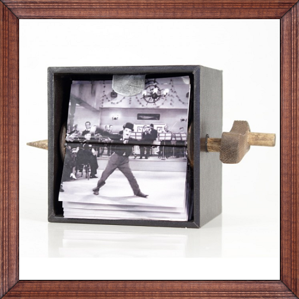
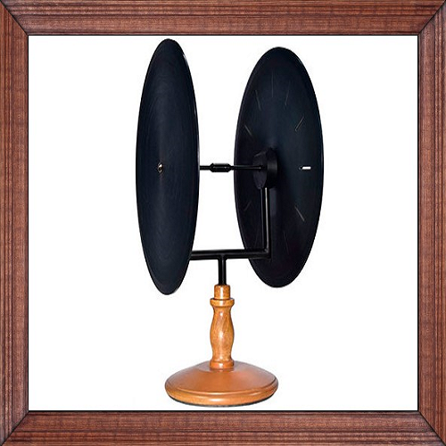
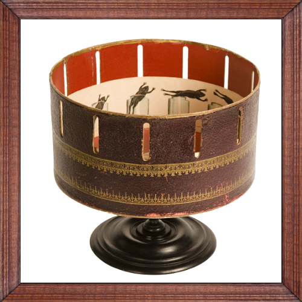
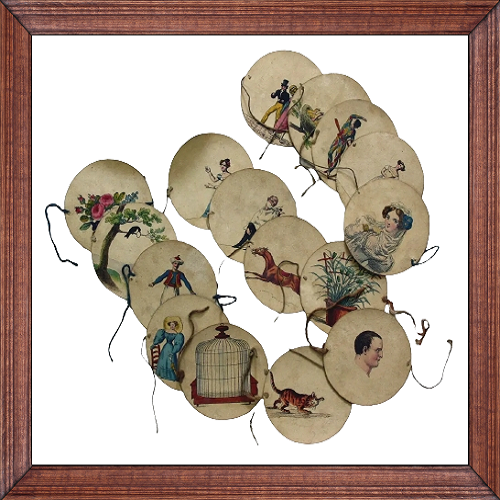
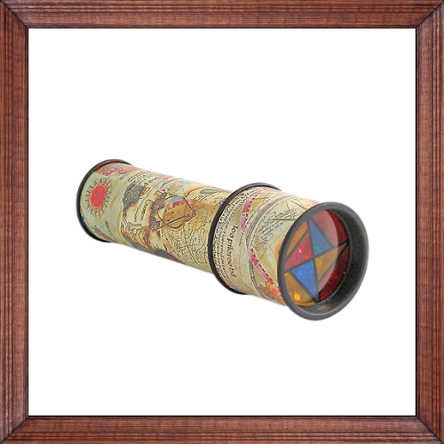

Objetos para mirar
Folioscopio Mecánico
El primer folioscopio fue patentado por el británico John Barnes Linnet en septiembre de 1868 con el nombre de kineograph. Fue la primera forma de animación que utilizaba una secuencia lineal de imágenes en lugar de la circular, la utilizada por el fenaquistiscopio. El pionero del cine alemán Max Skladanowsky exhibió por primera vez sus imágenes fotográficas en serie en forma de folioscopio en 1894, mientras que él y su hermano Emil no desarrollaron un proyector cinematográfico propio hasta el año siguiente. En 1895, Herman Caler y Dickson inventaron una especie de folioscopio mecanizado, que montaba las páginas en un cilindro rotativo en vez de tener forma de libro.
Fenaquistiscopio
Es un juguete inventado por Joseph-Antoine Ferdinand Plateau en 1829. Poco después de su invención, Plateau descubrió que el número de imágenes para lograr una ilusión de movimiento óptima era dieciséis, lo que con posterioridad aplicarían los primeros cineastas usando dieciséis fotogramas por segundo para las primeras películas. Es el primer dispositivo capaz de proporcionar la ilusión de una imagen en movimiento a partir de una secuencia de imágenes fijas. Para evitar el uso de un espejo, Plateau diseñó luego un nuevo dispositivo con dos discos coaxiales. Uno con pequeñas aberturas radiales y equidistantes, a través de las cuales se mira. Y el otro conteniendo una secuencia de imágenes fijas impresa. Al rotar los discos a la velocidad adecuada, la sicronía entre aberturas e imágenes crean la ilusión de movimiento.
Zoótropo
Se inspiró en el fenaquistiscopio pero, a diferencia de éste, permite que diversas personas lo contemplen al mismo tiempo. Su creador le dio el nombre original de "daedaleum", haciendo referencia al arquitecto griego Dédalo; décadas después, al momento de patentarse, fue nombrado como se lo conoce en la actualidad. Fue creado en 1834 por William George Horner y, en un principio, esta máquina se activaba por las manos de los usuarios, quienes hacían girar el tambor. Posteriormente, se evolucionó a un sistema de cuerdas accionadas mediante una manija.
Taumatropo
Es un instrumento de juego, también llamado "Maravilla Giratoria", que reproduce el movimiento mediante dos imágenes. Fue inventado por John Ayrton Paris en 1824. Fue muy popular en la Inglaterra victoriana; los taumatropos de la época solían incluir pequeños versos acompañando a las imágenes. Al estirar las bandas, el disco con las imágenes impresas comienza a girar rápidamente, generando una ilusión óptica.
Caleidoscopio
Es uno de los juguetes más conocidos del mundo y uno de los más apreciados por su efecto óptico. Fue creado en 1816 por el físico escocés David Brewster, quien lo patentó al año siguiente. Ante la proliferación de distintas versiones de los caleidoscopios, Brewster edita, hacia 1819, "A Treatise on the Kaleidoscope", en el cual expone los principios de su instrumento así como la forma adecuada de construirlo. La notoria fama que recibió el caleidoscopio se debe, en gran medida, a que juega con la posibilidad de presentar múltiples patrones de los objetos representados.